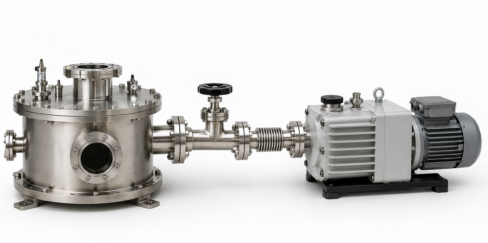
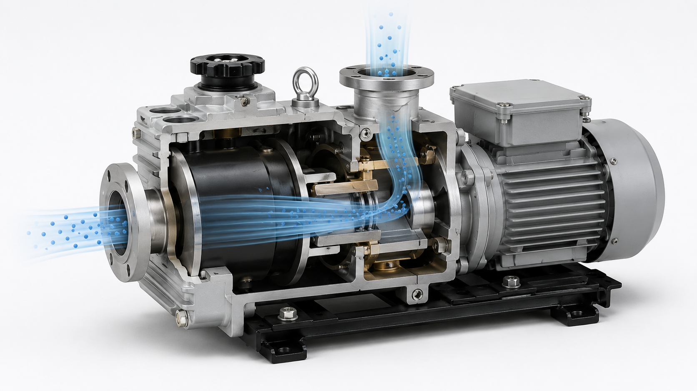
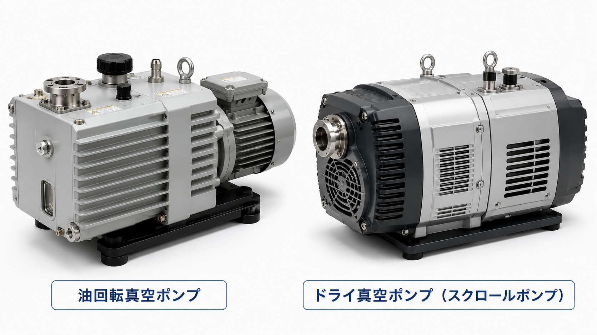
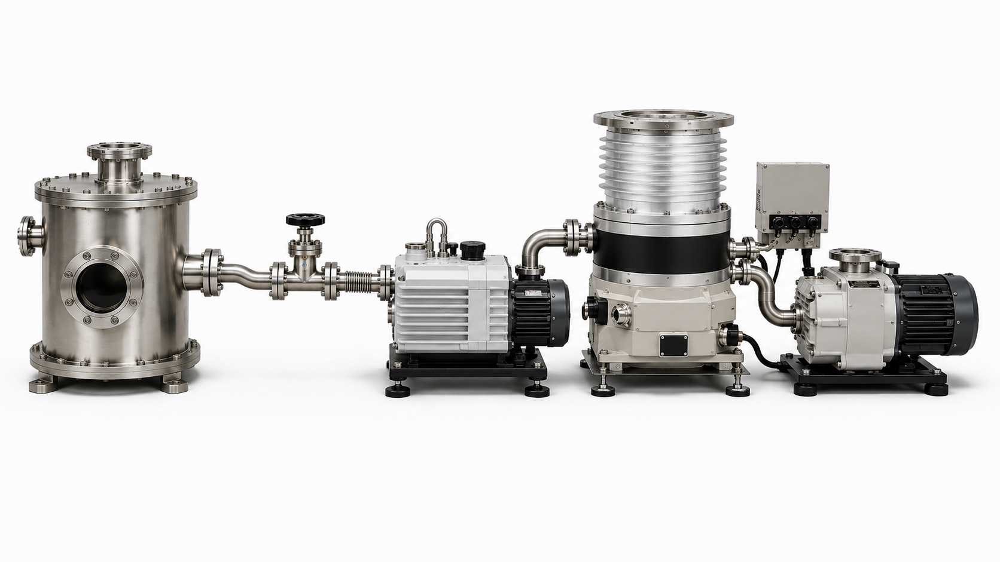
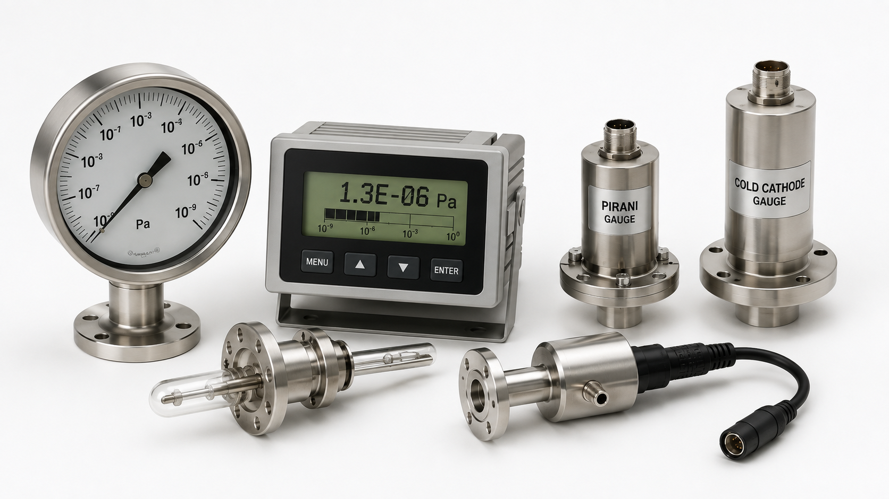

VACUUM TECHNOLOGY 03
03. 真空ポンプには、どんな種類がある？
02では、真空ポンプで気体を排気して圧力を下げる基本を学びました。ここでは、真空ポンプの種類や組み合わせ、真空装置の基本をもう一歩詳しく見ていきます。
STEP 1
1. 基本は「密閉して、気体を外へ出す」
真空をつくる基本はシンプルです。容器（真空チャンバー）を密閉し、真空ポンプを使って中の気体を外へ排出します。気体分子が減ると圧力が下がり、真空状態に近づいていきます。
① 密閉する真空チャンバーを閉じる
② ポンプで排気中の気体を外へ出す
③ 分子が減るチャンバー内の気体が少なくなる
④ 圧力が下がる真空状態になる

STEP 2
2. 真空ポンプは何をしている？
真空ポンプの役割は、密閉された空間から気体を取り除き、外へ排出することです。ポンプが動き続けることで、チャンバー内に残る気体分子は少なくなっていきます。

01とのつながり：空気を抜く → 気体分子が少なくなる → 圧力が下がる、という01で学んだ変化を、実際に起こす装置が真空ポンプです。
STEP 3
3. 真空ポンプにも種類がある
必要な真空の程度や用途によって、使うポンプは変わります。まずは、大気圧から排気を始められる代表的なポンプを2種類見てみましょう。

油回転真空ポンプ
油で内部を密封・潤滑しながら気体を排気する、広く使われている機械式真空ポンプです。ドライ真空ポンプ
ポンプ室に油を使わずに気体を排気します。油による汚染を避けたい用途などで利用されます。ここでは「どちらが優れているか」を覚える必要はありません。目的に応じて真空ポンプを使い分けることがポイントです。
STEP 4
4. もっと低い圧力をつくるには？
必要な圧力や用途によって、使うポンプや排気方法は変わります。1台のポンプだけですべての圧力範囲を効率よく排気できるとは限らないため、必要に応じて複数のポンプを組み合わせ、さらに圧力を下げていきます。

大気圧排気を始める
まず気体を排出圧力を下げていく
必要に応じて別のポンプを組み合わせる
より低い圧力へ目的の真空状態をつくる
例えば：高真空をつくる装置では、粗引き用ポンプとターボ分子ポンプなどの高真空ポンプを組み合わせることがあります。ターボ分子ポンプは、一般に大気圧から単独で排気するポンプではなく、背圧側のポンプと組み合わせて使用します。
STEP 5
5. 真空になったか、どうやって分かる？ ― 真空計
目で見ただけでは、チャンバー内がどの程度の真空なのかは分かりません。そこで、圧力を測る真空計を使います。圧力範囲によって、さまざまな種類の真空計を使い分けます。測定原理や測れる圧力範囲が異なるため、目的に合った真空計を選びます。

真空ポンプ
真空をつくる気体を外へ排出する
真空計
真空を測る圧力を確認する
まとめ
真空をつくる基本は「排気」と「測定」
密閉する → 真空ポンプで気体を排出する → 圧力が下がる → 真空計で圧力を確認する
より高い真空が必要な場合は、圧力範囲に合った複数のポンプや真空計を組み合わせます。これが真空装置の基本的な考え方です。
より高い真空が必要な場合は、圧力範囲に合った複数のポンプや真空計を組み合わせます。これが真空装置の基本的な考え方です。